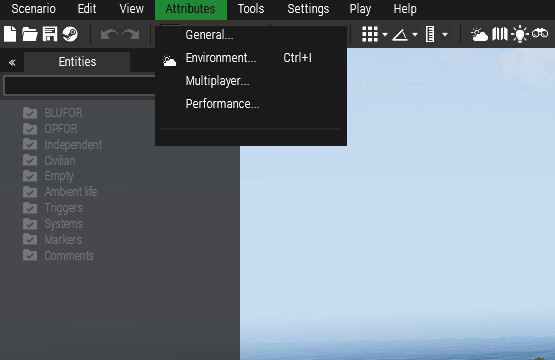
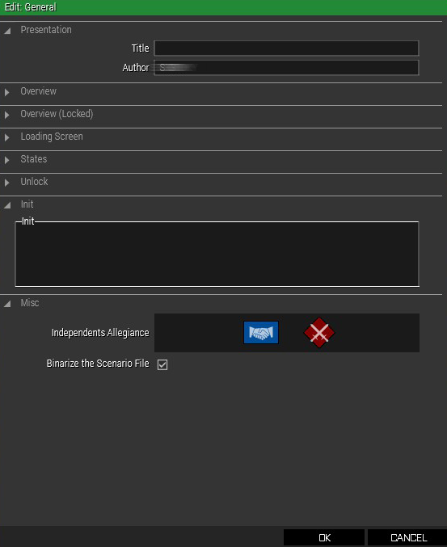
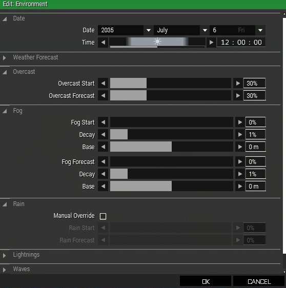
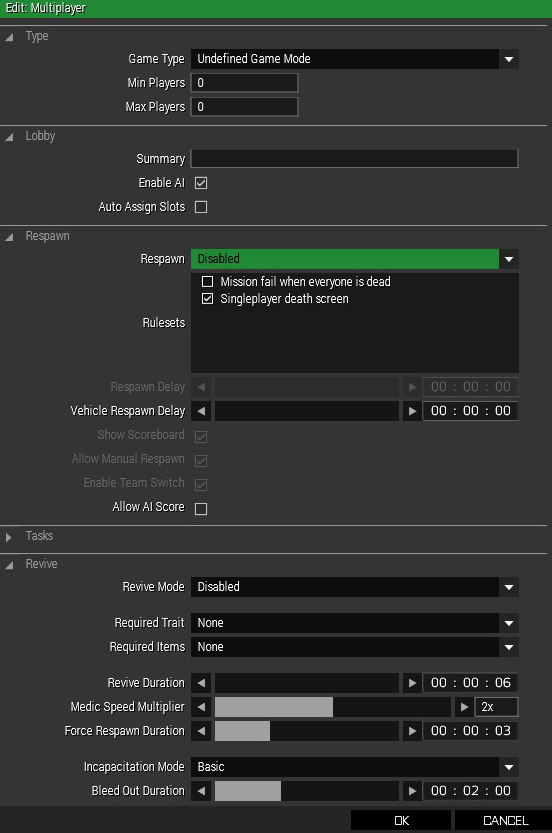
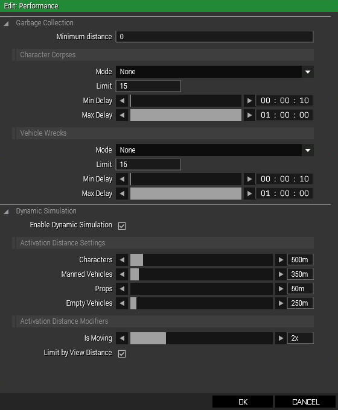
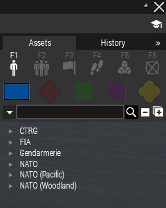
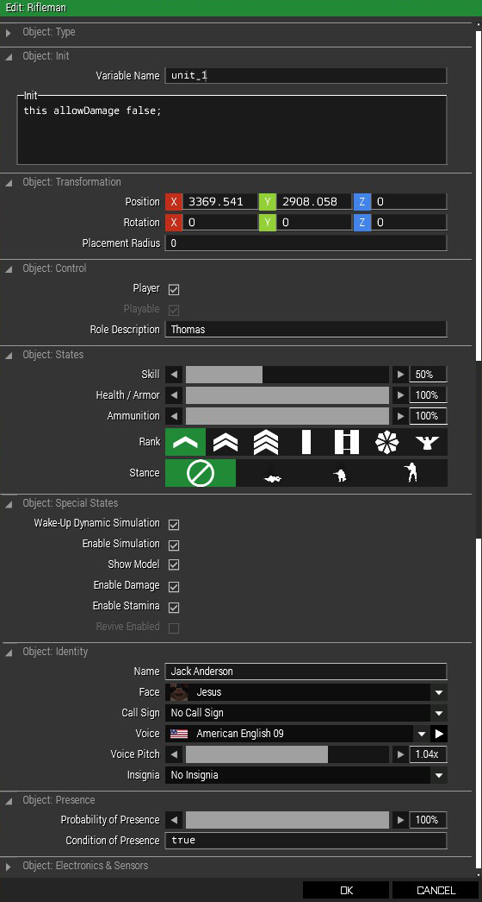
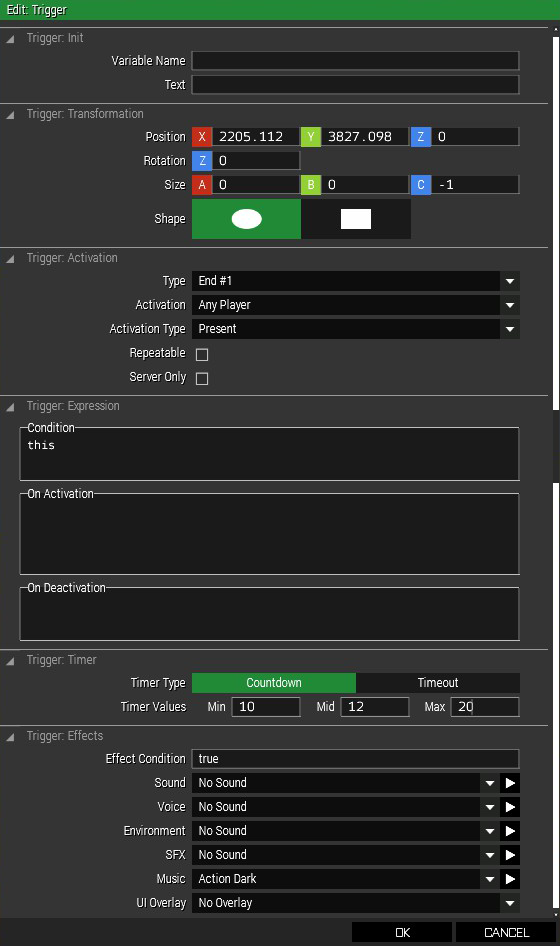

Introduction
Most of the basics here have nothing to do with actual scripting, but offers lots of useful information on mission editing for absolute beginners using Triggers, Modules, etc..
If you already know how to use them and how they work you can skip basics and go right to the ADVANCED section.
Eden Editor
Eden Editor is a 3D Mission developing software build-in to Arma 3.
To make some cool mission you must first start Arma 3 when it loads up you can't miss a big box on the right saying "EDITOR", press it and you're in.
Movement
In the Editor, controls are not so different from normal controls of the game, WASD for moving in specific directions, Q and Z to go up or down. To rotate your camera use your RIGHT MOUSE BUTTON, to select objects in the scenery LEFT CLICK them, you can select multiple objects by holding LEFT MOUSE BUTTON and dragging your mouse over the area you want to select. You can move the objects, rotate them by holding SHIFT, or even edit their attributes by DOUBLE CLICKING them, but we will come to that later.
Now you know the basic movement.
Mission Parameters
Next thing we need to show are Parameters.
You can find them on the Top Left side of your screen, click them and four options should pop-up: "General", "Environment", "Multiplayer" and "Performance".
Let's look at every one of them, starting with General.
General
The first thing we see is PRESENTATION, there you need to set the name of your scenario and display your name/name of the creator.
We don't need to be bothered with the next 3 right now, they allow creators to use custom made thumbnails for Steam Workshop for everyone to see. Those should be changed when the scenario is finished.
STATES are simple rules modifications allowing GPS, Map, HUD, Briefing and etc.
UNLOCK allows the creator to make keys, those can be then used for unlocking some multi-scenario stories. Really nice feature.
INIT, there you can write code that will execute at the start of the mission. But I recommend to make
"init.sqf" file in your mission folder, normally located:
C:\Users\User\Documents\Arma3\missions\mission_name, it can make it more organised there, more on
it here.
And then there's MISC., probably one of the most gameplay-wise important things to edit. You can change side relationships, allowing you to make scenarios where Independent faction attack Blufor, Opfor, or even both. It can't be changed mid-game without simple code, but that's also for later.
Enviroment
The most basic thing to change in Enviroment setting is of course DATE, you can change Year, Moth, Day and Time, you will be using that a lot probably.
WEATHER FORECAST is nothing to be worried about, if you don't want to change selected weather in the middle of the mission.
OVERCAST, it does what it's called, changes overcast.
FOG, You can change 3 main parameters, and all of them change the density of the fog one way or another.
RAIN and LIGHTNING change the intensity of those two, 0% meaning off.
WAVES changes strenght of ocean waves.
Multiplayer
Very useful menu if you're doing a multiplayer mission.
TYPE, there you can change gamemode, it won't affect gameplay but other on Steam would know what to expect. And then you choose Min and Max players on the server, it can be any number, but remember: more people = more hardware power required.
LOBBY, Summary will show everyone in the lobby some text you want to display to them, but Enable AI is much more important, it sets if the playable units will be controlled by AI if there are not enough people on the server. And Auto-assign slots will take permission from players to choose what they want to play as.
RESPAWN, very important in multiplayer missions, if you're aiming at a more realistic mission you can disable
them. But preferably leave them ON, that allows making some tweaks to the respawn rules, for example, you can
make respawn tickets, thus allowing respawn only certain times, or making player respawn on the position of
their dead body/custom spawn points that can be made by respawn_west (depending on the side). Or
you can make it much simpler by using modules that you can find here.
TASKS, not that useful, only used if you want shared tasks with all units.
REVIVE, allows reviving other players in the battlefield, you can either turn off or on, maybe with some rules that you need to be medic or need to have medkit, the choice is yours.
Performance
Performance can overall, well... change your or servers performance by despawning wrecks, dead bodies and their equipment.
Few options can be tweaked:
- Minimum Distance - changes at what distance the bodies would start to vanish.
- Limit - Limit of bodies.
- Delay - Min and Max delay between when the bodies start to vanish.
- Dynamic Simulation - Changes despawn time and distance on diffirent types of objects (As you can see, Charaters will disapper 500m away, while Props only 50m).
Now you know How to change Parameters.
Assets
Assets are crucial for the game, they are located at the Top Right of the screen. Can be placed by clicking at one of them and clicking again on the scenery.
You can edit every Asstet by double clicking on them.
And they are split into 6 main categories: Objects, Collections, Triggers, Waypoints, Systems, and Markers.
You can find all the assets here.
Objects
Objects consist of single Characters of 4 Different factions (BLUFOR, OPFOR, INDEPENDENT, CIVILIAN) and Props.
- BLUFOR - In the original game consists of NATO (North Atlantic Treaty Organization) soldiers.
- OPFOR - In the original game consists of fictional Arabic faction CSAT (Canton Protocol Strategic Alliance Treaty).
- INDEPENDENT - In the original game consist of factions AAF (Altis Armed Forces) and rebel faction FIA (Freedom and Independence Army).
- CIVILIAN - In the original game consist of Altis residents, pretty useful.
- PROPS - Make large portion of all Assets in the game but not as important. Consist of diffirent models of Buildings, Cars, Wrecks etc..
Compositions
Compositions are basically groups of objects, creating Squads, Teams, Blockades, Camps.
But there's one special type, Custom, this one allows you to create your own compositions of Assets.
Triggers
Those are the most important parts of mission editing and Scripting. They allow creating all sorts of events by fulfilling set conditions.
More on them here.
Waypoints
Waypoint, as you could have guessed, allows a light type of controlling AI movement. You can simply create a waypoint by having AI unit selected and SHIFT + LEFT CLICKING anywhere on the map, that creates waypoint which you can then simply edit. There are many types of waypoints, I'll list the most important and used:
- MOVE - Makes unit simply move to the designated position.
- LAND - Very useful if you're making mission where Heli or Plane needs to land.
- DESTROY - Unit will go to their target and destoy it.
- CYCLE - Great for units patroling specific area, never stops.
- GET IN - Makes units get it vehicles.
- GET OUT - Makes unit get out of vehicles.
- FOLLOW - Unit will follow character with the waipoint on them.
Systems
Systems contain of Game logic and Modules.
Game logic won't that useful, the only thing we need to worry about is Logic AND, Logic OR and many Assets used in Sector Control gamemode.
Markers
Markers are used as visible marks/areas on the map. But Asset "Empty" can be also very useful when scripting, its main purpose would be designating specific invisible areas.
Attributes
Attributes are a really important part of all Assets, they allow to change how they behave or their look, but mainly we are going to be using them to edit "Variable Name" and "Init." field.
As you can see, I've already set Variable Name to unit_1, by default player character
name is player (but only in Singleplayer). That's how we're going to refer to this object in scripts. Every
Asset must have a different name, variables aren’t case sensitive (“a” is the same as “A”).
In the "Init." field you can put simple or complex commands or even tasks to execute .sqf and .sqs files from
the mission folder. I've already put a simple line of code that would stop me from ever hurting myself, the code
is "this allowDamage false". If you're going to refer to the selected object in its Init. tab, use
this or its "Variable Name". Next is allowDamage, that is a command that's asking "Can
you damage this object?" expecting boolean type answer if its true: true, or not:
false.
Transformation does exactly what it says, you can precisely set object XYZ coordinates and rotation, and placement radius randomizes object position within the set radius (can be different every time).
Control sets if the object is controlled by a player or computer. If more than one unit is playable you can choose one of them to play as, very useful in multiplayer missions. Object Identity changes name of the unit displayed on multiplayer mission startup.
States change player and AI skill level, health, ammo. Also, you can change the rank of units (not really that useful, only immersion factor), and their stance at the start of the mission.
Special states change rules of the unit, you can make the model invisible, prevent the unit from respawning, prevent people from getting hurt (same as in the Init.). Disabling simulation makes the unit “vegetable”, he will be there but expect no response on anything.
Identity doesn’t change anything important, except maybe voice and Insignia.
Probability of presence could be useful but not really, it changes the probability of the Asset existing when the mission starts.
Electronic and sensors only affect if objects can be detected by them or not.
Triggers
As I've already said, triggers are the most important part of scripting and mission making. They run set script/command when all the conditions are met.
We can skip Variable name and Transformation, we already told that. If you haven't seen that go right here. The only thing new is a shape, but you can figure out what that does.
Trigger Activation. With my current setting it does activate when any player walks into that area and it will
end the mission with Debriefing NO.1, you can change the debriefing by looking into by editing file
description.ext and making new class CfgDebriefing{} and in it class End1{} but more
on that here.
There are not many Activation Type presets, but "None"
and "End" will be just enough. Activation has many options, four main types are these:
- Side Activation - Trigger will be activated
- Sector Side Activation - Used in Sector Control gamemodes, the trigger will activate when the set side captures the set sector.
- Radio Activation - Triggers activated by your remote command thru radio, by pressing 0 0 and then number corresponding with the command (commands name will be set in the "Text" field above).
- Unique object Activation - Object synced to the trigger as owner.
Then there are activations types eighter present, not present, or detected by set side.
Expression allow creator to use their own conditions and on Activation/Deactication scripts, the scripts can be
written in the box or executed from a .sqf file like this: _this = execVM "script.sqf";. (names
with _ are "local variables" and only work inside one script or trigger.
Timer can be set on Countdown (Script will start certain time after trigger activation) and Timeout (Trigger must be activated until the timer runs out or script On Deactivation will execute).
Effect are Sound Effects and Music that will be played when trigger meets its conditions.
Modules
Modules are basically self-sufficient scripts made into Assets. They are very easy to use even for someone who never wrote a single line of code. So that's why the rest of the page will be talking about individual Modules. Completed with video tutorial/showcase.